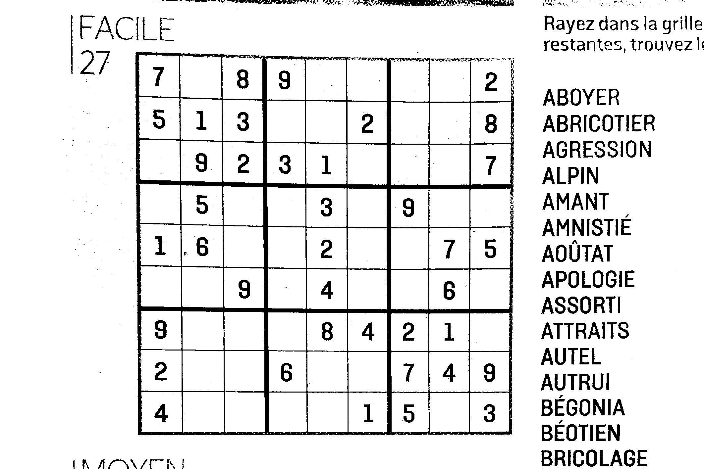
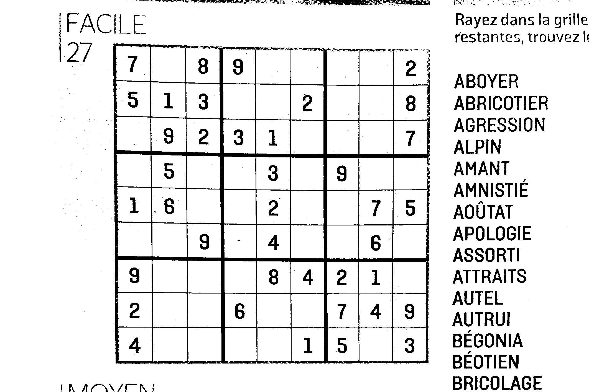
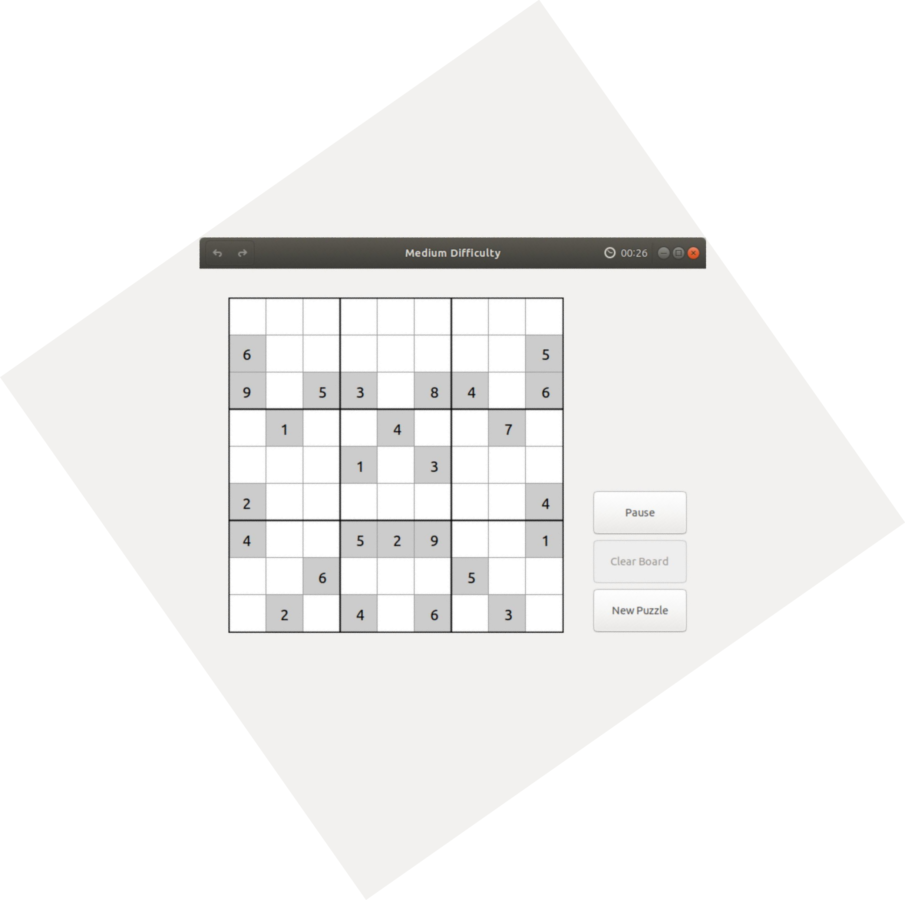
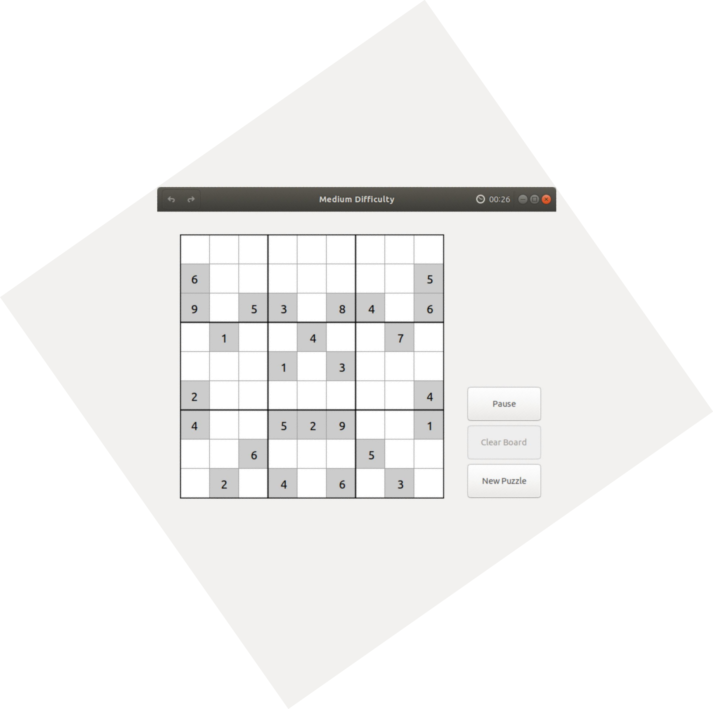
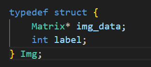
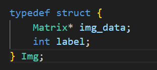

002 : Résolveur OCR de Sudoku
"Exploiter l'OCR et les réseaux neuronaux pour résoudre des puzzles Sudoku à partir d'images."
ROGER Robin
Vidéo de Présentation
\0/
À propos du Projet
Résumé :
Le Résolveur OCR de Sudoku est un outil capable de résoudre tout puzzle Sudoku en reconnaissant et traitant une image de la grille. Ce projet m'a permis d'explorer les réseaux neuronaux et de m'initier aux techniques de traitement d'image, y compris l'algorithme de transformée de Hough.
Objectif :
Le but principal du projet était de développer un système qui reconnaît et résout des puzzles Sudoku à partir d'images.
Voici les instructions du projet :
Fonctionnalités
Fonctionnalités Principales :
- OCR pour la détection de grilles Sudoku.
- Reconnaissance de chiffres basée sur des réseaux neuronaux.
- Algorithme efficace de résolution de Sudoku.
- Système interactif d'affichage des résultats et de correction.
Flux de Travail
Étapes du Processus :
- Prétraitement d'Image : Conversion en niveaux de gris, suppression du bruit et correction de rotation.
- Détection de Grille : Identification et extraction de la grille Sudoku à partir de l'image.
- Reconnaissance de Chiffres : Classification des chiffres de la grille à l'aide de réseaux neuronaux.
- Résolution de Sudoku : Algorithme pour compléter la grille.
- Affichage des Résultats : Superposition de la solution sur l'image d'origine.
Prétraitement d'Image
Le prétraitement de l'image est une étape cruciale dans le pipeline de résolution de Sudoku. Son objectif est d'optimiser la qualité de l'image d'entrée en traitant des problèmes comme le bruit, la dominance des couleurs et la rotation pour garantir la précision des étapes suivantes.
1. Amélioration du Contraste et Conversion en Niveaux de Gris
Améliorer le contraste en identifiant les couleurs dominantes et en les convertissant en blanc, suivi de la transformation en niveaux de gris. Cette étape améliore la visibilité des détails et prépare l'image pour un traitement ultérieur.


Figure 1 : Avant et Après Prétraitement
2. Algorithmes de Conversion en Niveaux de Gris
Algorithmes Considérés :
-
Moyenne Pondérée (Luminance) : Ajuste la sensibilité de
l'œil humain avec la formule :
Gray = 0.22 * R + 0.65 * G + 0.11 * B -
Formule Choisie (Simplifiée) : Pour une efficacité
computationnelle :
Gray = 0.299 * R + 0.587 * G + 0.114 * B - HSL (Teinte-Saturation-Luminance) : Extrait la luminance pour une meilleure cohérence.

Figure 2 : Conversion en Niveaux de Gris
3. Binarisation Adaptive
Convertit l'image en noir et blanc en analysant l'intensité des niveaux de gris et en calculant dynamiquement les seuils en fonction de la distribution des pixels. Les seuils adaptatifs assurent la robustesse contre les conditions d'éclairage variables.
 

Figure 3 : Binarisation Adaptive
4. Correction de Rotation
Détecte et corrige les grilles inclinées pour un alignement précis :
- Rotation Manuelle : Utilise des transformations affines pour aligner la grille avec les bords de l'image.
- Rotation Automatique : Applique la détection des bords (filtre de Canny) et la transformée de Hough pour déterminer l'angle dominant pour un alignement automatique.
 

Figure 4 : Correction de Rotation
Détection de Grille
Vue d’Ensemble :
La détection de grille implique l'identification et l'extraction de la grille Sudoku à partir d'une image en utilisant la détection de bords, des histogrammes et des techniques de segmentation. Cela garantit une localisation précise de la grille pour les traitements ultérieurs.
Étapes Clés :
- Détection de Bords : - Utilisé le filtre de Roberts pour une détection des bords basée sur le gradient, mettant en évidence les gradients horizontaux et verticaux pour identifier les contours de l'image.
-
Combinaison des Gradients :
Combiné les gradients horizontaux (Gh) et verticaux (Gv) pour
calculer la force globale du gradient :
G(x, y) = √(Gh(x, y)² + Gv(x, y)²). Le résultat a été seuillé pour créer une image binaire mettant en évidence les contours de la grille. - Localisation de la Grille par Histogramme : Utilisé des histogrammes pour compter les pixels noirs le long des lignes et colonnes, identifiant les bords supérieur, inférieur, gauche et droit de la grille.
- Segmentation de la Grille : Redimensionné et normalisé la grille à 900 pixels pour garantir la cohérence. La grille a été divisée en 81 cellules individuelles, enregistrées comme fichiers PNG séparés.


Figure 1 : Détection de Bords par Gradient

Figure 2 : Gradient Combiné et Détection des Contours

Figure 3 : Localisation de la Grille par Histogramme

Figure 4 : Grille Découpée et Cellules Individuelles
Reconnaissance de Chiffres
Vue d’Ensemble :
Les réseaux neuronaux sont une composante essentielle de ce projet, permettant une reconnaissance précise des chiffres Sudoku. Sans un réseau neuronal correctement configuré, le système échouerait à reconnaître correctement les chiffres de la grille, empêchant la résolution du puzzle.
Étapes Clés :
- Implémentation du Réseau Neuronal : Le projet a tiré parti des structures préexistantes en C pour les matrices et les réseaux neuronaux, y compris des opérations comme la multiplication, l'addition et la transposition de matrices. Cela a fourni une base solide pour l'implémentation des algorithmes de propagation avant et rétropropagation.
- Entraînement pour le Problème XOR : L'architecture du réseau XOR se composait de 2 neurones d'entrée, 2 neurones dans la couche cachée et 1 neurone de sortie. Cela a aidé l'équipe à comprendre les bases des taux d'apprentissage, de la rétropropagation et du réglage des hyperparamètres.
- Réseau Neuronal pour la Reconnaissance de Chiffres : Le réseau neuronal final a été entraîné pour reconnaître les chiffres (0–9) à l'aide d'un ensemble de données de Kaggle, composé de 6 000 images étiquetées. Chaque image a été prétraitée et convertie en un objet structuré en C pour l'entraînement.
-
Performance et Résultats :
- Architecture finale : 784 neurones d'entrée, 1 couche cachée
avec 200 neurones, et 10 neurones de sortie (un pour chaque
chiffre).
- Taux d'apprentissage : 0,08.
- Fonctions d'activation : Leaky ReLU et dérivée de ReLU.
Atteint une précision de 96 % sur l'ensemble d'entraînement et un succès à 100 % sur les images de test Sudoku.
Figure 1 : Structures de Matrices et Réseaux Neuronaux

Figure 2 : Architecture du Réseau Neuronal XOR
 

Figure 3 : Format des Données et Structure d'Image

Figure 4 : Résultats de Reconnaissance sur les Images de Test Sudoku
Affichage des Résultats
Vue d’Ensemble :
L'affichage des résultats intègre le traitement d'image, la reconnaissance de chiffres basée sur un réseau neuronal, et l'interaction utilisateur pour superposer la solution à l'image Sudoku d'origine. Cette approche robuste garantit la transparence et le contrôle de l'utilisateur tout au long du processus de résolution.
Étapes Clés :
- Aperçu de l'Interface : L'interface utilisateur commence par une page d'accueil présentant le projet, suivie d'options pour explorer diverses sections telles que Images, Détails des Tâches et Téléchargement.
-
Interaction avec l'Application :
- Les utilisateurs peuvent choisir entre les modes "Résoudre" et
"Étape par Étape".
- En "Étape par Étape", les utilisateurs voient chaque étape du processus de résolution.
- Le mode "Résoudre" offre une fonctionnalité de résolution directe. - Sélection et Prétraitement des Images : Les utilisateurs sélectionnent une image Sudoku via un explorateur de fichiers. L'application traite l'image, détecte les contours, segmente les cellules et convertit les chiffres en données exploitables.
-
Reconnaissance des Chiffres et Validation Utilisateur :
L'image traitée est envoyée au réseau neuronal pour la
reconnaissance des chiffres. Les résultats sont affichés avec des
niveaux de confiance :
- Les chiffres avec une grande confiance apparaissent en vert.
- Les chiffres avec une faible confiance apparaissent en rouge, permettant une correction manuelle par l'utilisateur. - Solution Finale : Une fois toutes les corrections effectuées, l'application superpose la solution résolue sur l'image Sudoku d'origine, garantissant un résultat précis et esthétiquement agréable.


Figure 1 : Pages d'Accueil et de Téléchargement

Figure 2 : Options d'Application et Vue Étape par Étape

Figure 3 : Explorateur de Fichiers pour la Sélection d'Image

Figure 4 : Reconnaissance des Chiffres et Correction

Figure 5 : Sudoku Résolu Final